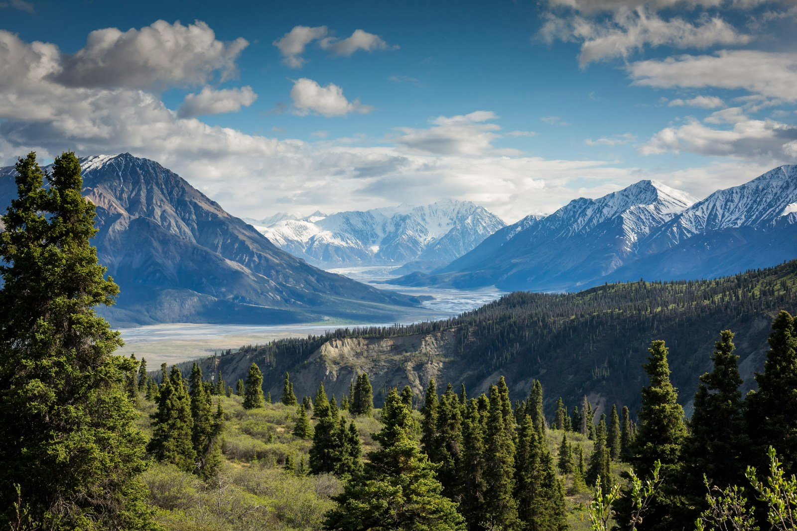
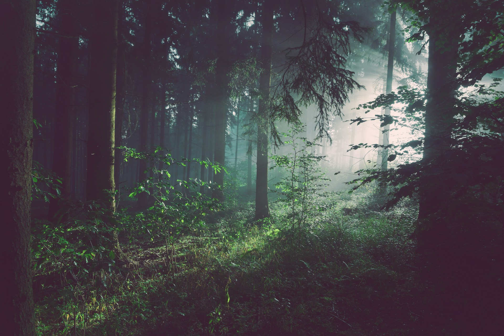
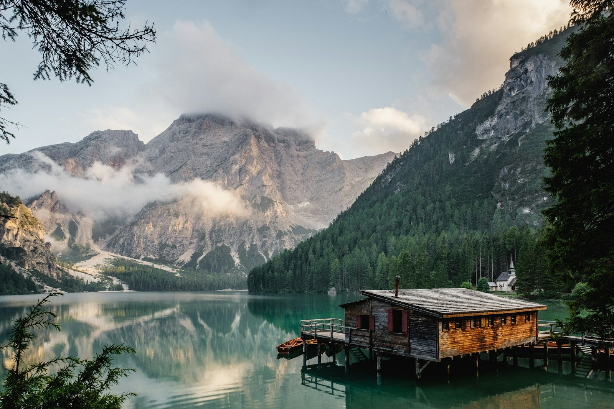

― A FIELD GUIDE TO THE OUTSIDE
A little closer
to the wild.
Less noise. More wonder. Discover places, stories,
and small moments that bring you back to nature.
01 / PLACES TO GET LOST IN
Out of the ordinary.
Into the open.
A change of scenery.
A different kind of perspective.


02 / NOTES FROM THE TRAIL
For the curious
at heart.
You don't have to go far.
You just have to look a little
closer.
MINDFUL WANDERING · FIELD NOTE 01
The art of noticing
A quieter walk starts when you stop counting the steps and start seeing the details.
FRESH PERSPECTIVES · FIELD NOTE 02
A little higher, a little lighter
What a wide horizon can teach us about making space for the things that matter.
SLOW LIVING · FIELD NOTE 03
In praise of doing nothing
No destination. No checklist. Just a place beside the water and time to be there.
03 / SLOW MOMENTS
Nothing to do.
Everything to see.
A few seconds in the life of a flower. Press play, take a breath, and give something small your full attention.
A MOMENT IN BLOOM
A short nature study · 0:05
A short nature study · 0:05
Silent footage · MDN / CC0
04 / THE ELSEWHERE WAY
Outside is for everyone.
Elsewhere is an independent, fictional nature journal about everyday adventure. We believe a little time outside can change the shape of a day. A neighborhood trail counts. So does the tree outside your window.
Go gently. Stay curious. Leave it wild.
Back to the beginning